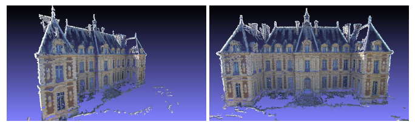

Export to PMVS/CMVS¶
OpenMVG exports [PMVS] ready to use project (images, projection matrices and pmvs_options.txt files).
Once a 3D calibration have been computed you can convert the SfM_Ouput files to a PMVS project.
$ openMVG_main_openMVG2PMVS -i Dataset/outReconstruction/sfm_data.json -o Dataset/outReconstruction
$ pmvs Dataset/outReconstruction/PMVS/ pmvs_options.txt

Figure: Multiple View Stereo-vision point cloud densification on the estimated scene using [PMVS].
In order to use CMVS for large scene openMVG2PMVS exports also the scene in the Bundler output format.
$ openMVG_main_openMVG2PMVS -i Dataset/outReconstruction/sfm_data.json -o Dataset/outReconstruction
$ cmvs Dataset/outReconstruction/PMVS/ [MaxImageCountByCluster=100]
$ cmvs Dataset/outReconstruction/PMVS/ 30
$ genOption Dataset/outReconstruction/PMVS/
$ sh Dataset/outReconstruction/PMVS/pmvs.sh